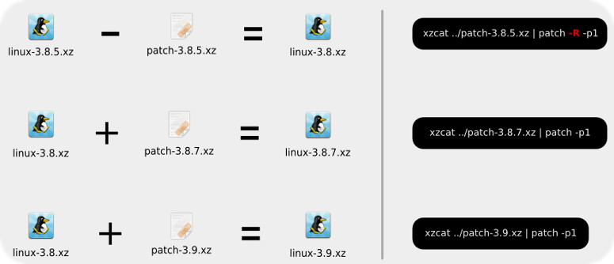

Some of us love living on the edge, use the last stable kernel release, no problem, go to kernel.org, download the file and good to go, compile.
But... each kernel weights almost 70MB (in xz format), and getting the whole package every time when there are only a few changes seems like such a waste of time and bandwith.
Next, a real life example, my very own holy crap!! this is awesome!! moment.
Let's see, right now (2013-04-15) the stable version is 3.8.7, you get it, compile it and install, nothing fancy.
It's all good, kernel is running fine and we're living on the edge, but... oh no, those kernel folks released a new fix 3.8.8, do we have to download 70 more megabytes? No f** way!
If you look carefully there are several patches to download, I never realized how to use those until now.
Every release has the full package, and the patch, the later is created on top of the last stable release base, i.e. 3.7.0, 3.8.0, and so forth.
So you apply patch-3.8.8 to linux-3.8.0 not linux-3.8.7.
But how do I get 3.8.0? Download again?
No. Just get the patch-3.8.7 and substract it from linux-3.8.7.
A full working example.
All we need is:
The original kernel we got: * https://www.kernel.org/pub/linux/kernel/v3.x/linux-3.8.7.tar.xz
The patches: * https://www.kernel.org/pub/linux/kernel/v3.x/patch-3.8.8.xz * https://www.kernel.org/pub/linux/kernel/v3.x/patch-3.8.7.xz
I assume all 3 files are on the same directory: linux-3.8.7.xz, patch-3.8.7 y patch-3.8.8
These are the steps to convert 3.8.7 on 3.8.8:
tar xvf linux-3.8.7.tar.xz cd linux-3.8.7/ xzcat ../patch-3.8.7.xz | patch -R -p1
The -R is for reverse patch.
We got 3.8.0, now proceed to apply the patch 3.8.8:
xzcat ../patch-3.8.8.xz | patch -p1
Eureka! We just got 3.8.8 without wasting that much bandwith.
Houston, we'ready to compile.
If you want to try a -rc kernel (bleeding edge) just apply any rc patch (like 3.9-rc8) to the previous base release (3.8.0).
Read the FAQ!
https://www.kernel.org/category/faq.html